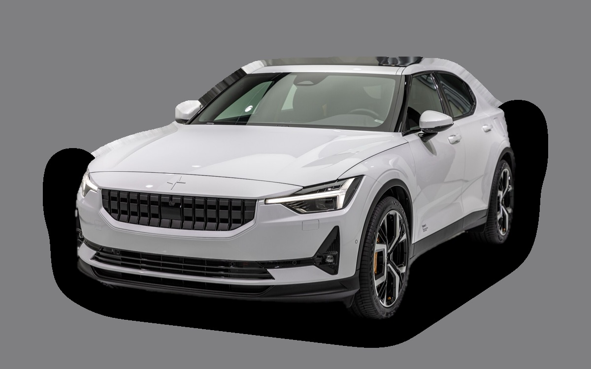

Vad kostar en Polestar 2 per månad?
En Polestar 2 från 2023 kostar cirka 3 241 kr i månaden, allt inräknat.

.jpg){kind=link}
Månadskostnad per årsmodell
| Årsmodell | Version i beräkningen | Pris | Per månad | Betyg |
|---|---|---|---|---|
| 2026 | Standard Range Single Motor, Standard | 543 300 kr | 5 551 kr | D |
| 2023 | Standard Range Single Motor, Standard | 331 000 kr | 3 241 kr | A |
| 2020 | Standard Range Single Motor, Standard | 244 000 kr | 2 767 kr | A |
Räknat på 5 års ägande och 1 250 mil per år, med bränslepriser från 2026-10-22. Månadskostnaden innehåller värdeminskning, drivmedel, service och reparationer, försäkring och fordonsskatt.
Så fördelas kostnaden för en 2023:a
- Värdeminskning: 1 828 kr/mån
- Drivmedel: 401 kr/mån
- Service och reparationer: 307 kr/mån
- Försäkring: 676 kr/mån
- Fordonsskatt: 30 kr/mån
Leasa eller köpa ny?
Polestar Privatleasing erbjuder Polestar 2 Business edition från 5 495 kr i månaden i 36 månader och 1 500 mil per år. Så mycket kostar det jämfört med att köpa samma bil ny för 617 400 kr och sälja den efter 36 månader, räknat på 1 250 mil per år och 5 procents ränta.
Leasa är billigast 2 524 kr mindre per månad, 90 864 kr på 36 månader.
| Per månad | Leasa | Köpa |
|---|---|---|
| Leasingavgift, 1 250 mil per år | 5 495 kr | – |
| Uppläggnings- och aviavgift | 81 kr | – |
| Värdeminskning | – | 5 975 kr |
| Ränta på pengarna, 5 % | – | 2 124 kr |
| Service och reparationer | 206 kr | 206 kr |
| Drivmedel | 406 kr | 406 kr |
| Försäkring | 905 kr | 905 kr |
| Fordonsskatt | 30 kr | 30 kr |
| Totalt per månad | 7 122 kr | 9 646 kr |
| Totalt på 36 månader | 256 392 kr | 347 256 kr |
Erbjudandet gäller 1 500 mil per år. Kör du mindre blir leasingavgiften densamma. Polestar Privatleasing: Polestar 2 Business edition, 36 månader, 1 500 mil per år, service ingår inte, fast avgift. Uppläggningsavgift 795 kr och aviavgift 59 kr i månaden (uppskattat, beloppen står inte i erbjudandet). Källa: polestar.com, avläst 26 oktober 2026, gäller till och med 31 december 2026.
Köpa: 617 400 kr för en ny bil i samma version, och 402 291 kr tillbaka när du säljer den efter 3 år. Restvärdet bygger på annonspriserna för 3 år gamla bilar, justerat för att du kör 3 750 mil på 3 år i stället för typiska 7 100 mil. Räntan är vad pengarna kostar: ränta på ett billån, eller räntan du går miste om på sparade pengar. Drivmedel, försäkring och skatt är desamma. Övermil och onormalt slitage betalas när leasingbilen lämnas tillbaka, och byter du in en köpt bil hos en handlare får du oftast mindre än annonspriset.
Räkna med din egen körsträcka och ränta · Alla leasingbilar jämförda
Begagnatpriser i annonser
| Årsmodell | Medianpris | Annonser | Typiskt miltal |
|---|---|---|---|
| 2026 | 554 900 kr | 14 | 1 000 mil |
| 2025 | 494 400 kr | 6 | 3 700 mil |
| 2024 | 434 800 kr | 28 | 5 700 mil |
| 2023 | 350 400 kr | 54 | 8 200 mil |
| 2022 | 321 500 kr | 16 | 6 400 mil |
| 2021 | 317 900 kr | 16 | 10 400 mil |
| 2020 | 332 900 kr | – | – |
Medianpriset i svenska annonser per årsmodell i oktober 2026 (källa: Blocket, AutoUncle). Annonspriser är utgångspriser, och slutpriset kan bli lägre.
Motorer och versioner
| Motor | Drivmedel | Effekt | 0–100 km/h | Förbrukning (WLTP) | Räckvidd | Årsmodeller | Pristillägg |
|---|---|---|---|---|---|---|---|
| Standard Range Single Motor | El | 272 hk | 6,4 s | 15,5 kWh/100 km | 532 km | från 2020 | – |
| Long Range Single Motor | El | 299 hk | 6,2 s | 16 kWh/100 km | 655 km | från 2020 | +46 300 kr |
| Long Range Dual Motor | El | 421 hk | 4,5 s | 17,5 kWh/100 km | 590 km | från 2020 | +86 300 kr |
- Utrustning: Standard, Plus (+29 900 kr)
Fakta
- Kaross
- Sedan
- Årsmodeller
- sedan 2020
- Nypris från
- 543 300 kr
- Bagage
- 405 liter
- Euro NCAP
- 5 av 5 stjärnor
- Nybilsgaranti
- 3 år
- Driftsäkerhet
- 3 av 5
- Helförsäkring, uppskattning
- 10 600 kr/år
- Service, uppskattning
- 2 400 kr/år
Fördelar och nackdelar
Fördel
Svensk elbil med bra köregenskaper.
Nackdel
Snabb värdeminskning och trångt baksäte.
Liknande bilar
 Tesla Model 33 192 kr/mån som 2023:a
Tesla Model 33 192 kr/mån som 2023:a Volvo S403 172 kr/mån som 2009:a
Volvo S403 172 kr/mån som 2009:a Saab 9-3 Sport Sedan3 482 kr/mån som 2008:a
Saab 9-3 Sport Sedan3 482 kr/mån som 2008:a Hyundai Ioniq 63 504 kr/mån som 2023:a
Hyundai Ioniq 63 504 kr/mån som 2023:a Volvo S60 II3 573 kr/mån som 2015:a
Volvo S60 II3 573 kr/mån som 2015:a Volvo S803 698 kr/mån som 2013:a
Volvo S803 698 kr/mån som 2013:a
Uppdaterad 2026-10-27 · annonsdata okt 2026